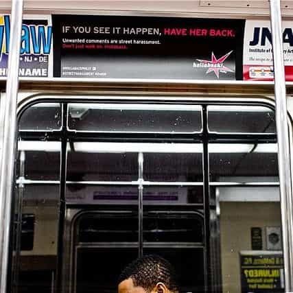

< < < Back
Street Harassment Is A Myth Invented By Socially Retarded White Women – Return Of Kings
Only to today’s autistic American woman does simply being talked to amount to a crisis. Every man over a certain age can agree: girls nowadays are outright crippled by basic social interaction with people they don’t already know. From being asked for directions, to simple elevator small-talk, today’s 20-something woman is an agitated social retard who’s scared of all men, and whose only eye contact is with her iPhone’s “retina” display.
Things only get worse if the man who’s talking to her should, god forbid, obviously try hitting on her—especially if he’s a racial minority. That’s an outright emergency, one that a growing chorus of misfits, weirdos, and social rejects are trying their hardest to brand as criminal. They call it “street harassment,” and it’s part of a cocktail of movements aimed at showing just how dangerous the first world is for the defenseless white girl.
Women Don’t Understand What It Takes to Meet Women
For millennia, men and women met in pretty much one of two ways: they were introduced to one another by someone they knew in common or—for the last several generations—the man had to muster the courage and skill to talk to her in public. An entire planet was populated by regular men seizing the fraction-of-a-second he has to get a woman’s attention, deploying his fine-tuned social skills to get her talking, and targeting his powers of persuasion to convincing her to show up again.
That process is harder than it looks. Have you ever had the joy of seeing a woman try to pick up a man cold with something besides her looks? If so, you already know that women have zero skill at creating anything but the most pedestrian of conversations, and even less at sustaining them long enough to get a viable number.
But, while men are across-the-board better at it than women, not all of us are created equal. Just like some women are fatter and uglier than others, some men are better than others at talking to women. For every smooth cat with a phone full of fresh numbers, there are two guys throwing out corny pick-up lines, lavishing sub-standard women with thirsty compliments, and undercutting themselves with self-deprecation in hopes of landing a crumb of traction. For better or worse, it seems the thirstiest and most desperate game comes from men from lower social classes and minority backgrounds.
Baiting Poor Men of Color on Video
Last week, a video showing precisely that emerged. Turns out some internet heroes with an agenda hired an “actress”—who’s a 6.5, at best, on the 1-to-10 scale—to walk through some New York streets on camera for a supposed 10-hour stretch. Judging by the woman’s physique, this had to have been done over the course of several sessions. The intention was to show just how much men would “bother” her during the course of that stroll.
What most people see is a resting-bitch-faced woman stomping her way down some urban streets. Several men try to talk to her in the carefully edited two-minute clip. The men toss a bunch of weak lines in her direction—a standard cocktail of lame compliments and self-deprecating attempts at humor—and move on when none of it hooks.
One or two guys trail her for a few steps to deliver their lines before also giving up. You’re meant to see that being a woman in today’s world is to be subjected to non-stop harassment at the hands of would-be rapists. You could indict the guys for having abysmal game—and maybe bad taste—but not much else.
Sheltered and Fragile Women Fear Normal Social Interaction
Just like being dumb in school has turned into a “disorder” in less than a generation, bad game has suddenly turned into a crime. The word “harassment” used to actually mean something, but today’s American woman is so sheltered and fragile that having to deal with men being interested in her or giving her sloppy (and often undeserved) compliments—if they’re not handsome enough—is a cause for panic.
In fact, it’s even more than that. It’s an outright crime that requires a national campaign to encourage women (and white knights) to report catcallers online.

But the move to re-brand lame pickup lines into harassment isn’t just simple hysteria. I’m not first to point out that it’s outright racism and classism. To parade a provocatively dressed woman through the toughest (and most ethnic) neighborhoods of New York—for hours upon hours—until something happens, is to bait lower- and working-class men into behaviors that are not uncommon, if not straight-up expected, in their environment.
In hardscrabble neighborhoods, only the boldest, loudest, and toughest members of crowd survive. From making friends to picking up girls to not being bullied, things are done differently in the ghetto. If you’re a man walking through these same neighborhoods, you’re just as likely to be “harassed” by guys asking you dumb questions meant to trip you up, talking trash to you, or flat-out threatening you. I’ve had all three happen to me many times.
Viral Street Harassment Video Is Just Another “Hood Prank”
This video—and the movement around it—is nothing more than thinly veiled ridicule of the less fortunate. Cloaked as concern, it’s little more than alarmism manufactured by privileged white women who think the world revolves around their feelings and adheres to their same sterilized, protected, suburban worldview.
It’s no different than the string of now-popular “hood prank videos,” where upper-middle-class white “pranksters” go into black neighborhoods and provoke men of color by stepping on their shoes, stealing from them, or generally annoying them. When the black men react violently, everyone can have a laugh at the animal in the cage.
The only difference here is that white girls are the pranksters.
Men Have Always Met Women By Talking to Them
Many years ago, my father met my mother by “street harassing” her. He stopped her on the street with a silly remark and, as she reflexively tried to walk away from him, he followed next to her and kept talking. Two weeks later, they went on their first date. Eighteen months later, they were married. There are millions of stories like this, but soon this time-honored way of meeting a complete stranger—if the damaged women at Hollaback! and its ilk have their way—will be illegal. Why?
Because today’s socially awkward and terrified woman can’t countenance a social interaction that hasn’t somehow been funneled and vetted through the precious iPhone glued to her hand.
Read More: Rape Jokes About Men Are Okay


{kind=link}
{kind=link}
{kind=link}